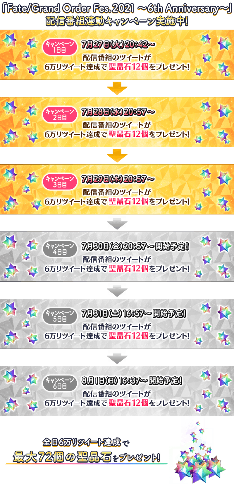
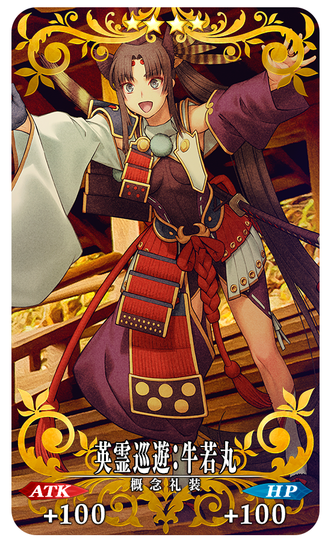
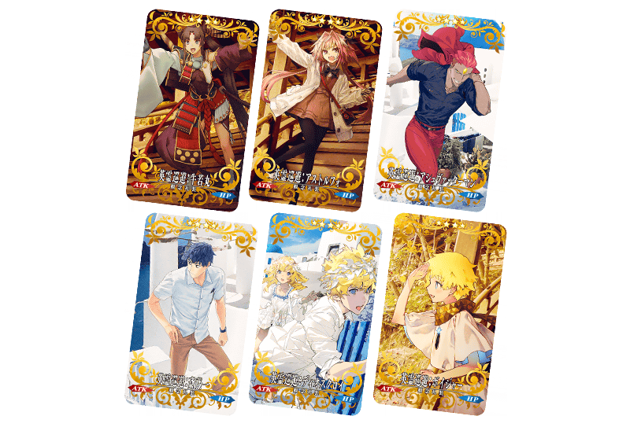
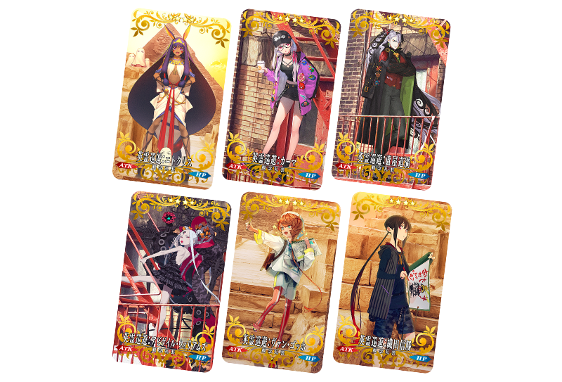
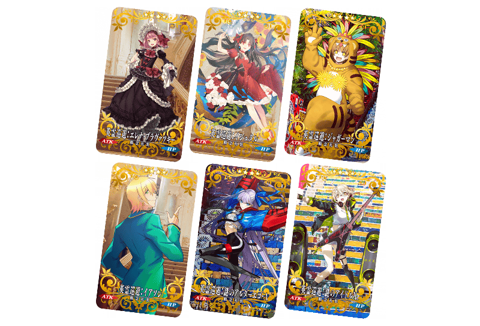

為了記念「Fate/Grand Order Fes. 2021 ～6th Anniversary～」的舉辦，舉辦『「Fate/Grand Order Fes. 2021 ～6th Anniversary～」舉辦記念宣傳活動』！
※本頁面皆為開發中圖片。會有與實際圖片相異的情況。
◆舉辦期間◆
2021年7月27日(二) 17:00～8月10日(二) 11:59
◆6周年記念配信節目的詳細◆
有關6天連續播送的6周年記念播送節目的詳細，請確認特設網站或下述的橫幅。
【特設網站】
https://fes.fate-go.jp/
【7月29日(四) 19:57更新】 
從2021年7月27日(二)6天間每天放送的播送節目的各推特轉推數，各達成6萬轉推的話，會向2021年8月2日(一) 2:59前通過「特異點F 炎上汙染都市 冬木」的御主贈送聖晶石12個(聖晶石召喚最多4次份)，每天達成6萬轉推贈送最多72個的聖晶石(聖晶石召喚最多26次份)！
■「Fate/Grand Order」官方推特
@fgoproject
◆配發預定日◆
2021年8月2日(一) 3:00～8月9日(一) 2:59的期間中，在初次登入至「Fate/Grand Order」的時間點，贈予至禮物箱。
※達成6萬轉推份的聖晶石會在8月2日(一) 3:00～8月9日(一) 2:59之間統一配發。
◆贈送對象◆
2021年8月2日(一) 2:59前通過「特異點F 炎上汙染都市 冬木」的御主對象
※上述時間前，在管理室(ターミナル)畫面的關卡橫幅必須要有「CLEAR」的文字顯示。
| 開始時間 | 達成目標 (轉推數) |
贈送內容 | |
|---|---|---|---|
| 7月27日(二) 19:42～ | 6萬轉推 |

|
聖晶石 12個 |
| 7月28日(三) 19:57～ | 6萬轉推 |
|
聖晶石 12個 |
| 7月29日(四) 19:57～ | 6萬轉推 |
|
聖晶石 12個 |
| 7月30日(五) 19:57～ | 6萬轉推 |
|
聖晶石 12個 |
| 7月31日(六) 15:57～ | 6萬轉推 |
|
聖晶石 12個 |
| 8月1日(日) 15:37～ | 6萬轉推 |
|
聖晶石 12個 |
※未到達達成目標轉推數及期間內未登入的情況，無法領取達成報酬。 ※(聖晶石召喚最多26次份)是限進行同個聖晶石召喚的情況。
為了記念6周年，舉辦收集從「第一特異點 邪龍百年戰爭 奧爾良」到「終局特異點 冠位時間神殿 所羅門」殘留印象的戰鬥「6周年記念回憶關卡」！
通過在迦勒底之門內出現「回憶關卡」，入手可交換1張喜愛期間限定概念禮裝「英靈巡遊」的「FGO 6th Anniversary 英靈巡遊券」等特別報酬吧！
「英靈巡遊」是世界12個舞台的其一為中心所描繪的36張期間限定概念禮裝！

另外本次實施為了決定追加的回憶關卡的Fate/Grand Order 玩家問卷！
玩家問卷回答的對象為第2部 序～第2部 第5章 奧林帕斯為止，被選上前2個關卡會在日後做為新的回憶關卡追加！
◆問卷回答期間◆
2021年7月27日(二) 17:00～7月30日(五) 11:59
※如果回答填寫中期間結束，將無法送出。敬請原諒。
6周年記念回憶關卡一覧
「回憶關卡」就算通過後也不會消失，可以變更從者和概念禮裝的組合等後無限次挑戰。
※關卡通過報酬、戰利品、御主EXP、魔術禮裝EXP、絆點數只可在初次通過時獲得。
◆回憶關卡舉辦期間◆
2021年7月27日(二) 17:00～8月10日(二) 11:59
◆期間限定概念禮裝「英靈巡遊」交換期間◆
2021年7月27日(二) 22:30～8月17日(二) 11:59
◆回憶關卡開放條件◆
| 開放時間 | 關卡名 | 開放條件 | 通過報酬 | |
|---|---|---|---|---|
| 2021年 7月27日(二) 18:00 |
第一特異點 回憶關卡 |
通過 第一特異點 邪龍百年戰爭 奧爾良 | FGO 6th Anniversary 英靈巡遊券 1張 |
|
| 第二特異點 回憶關卡 |
通過 第二特異點 永續狂氣帝國 羅馬七省＆通過第一特異點 回憶關卡 |

|
呼符 1張 | |
| 第三特異點 回憶關卡 |
通過 第三特異點 封鎖終局四海 俄刻阿諾斯＆通過第二特異點 回憶關卡 |
|
呼符 1張 | |
| 第四特異點 回憶關卡 |
通過第四特異點 死界魔霧都市 倫敦＆通過第三特異點 回憶關卡 |
|
呼符 1張 | |
| 第五特異點 回憶關卡 |
通過第五特異點 北美神話大戰 合眾為一＆通過第四特異點 回憶關卡 |
|
呼符 1張 | |
| 第六特異點 回憶關卡 |
通過第六特異點 神聖圓桌領域 卡美洛＆通過第五特異點 回憶關卡 |
|
呼符 1張 | |
| 第七特異點 回憶關卡 |
通過第七特異點 絕對魔獸戰線 巴比倫尼亞＆通過第六特異點 回憶關卡 |
|
呼符 1張 | |
| 終局特異點 回憶關卡 |
通過終局特異點 冠位時間神殿 所羅門＆通過第七特異點 回憶關卡 |
|
呼符 1張 | |
| 2021年 8月1日(日) 19:00 |
??? | ??? | FGO 6th Anniversary 英靈巡遊券 1張 |
|
| ??? | ??? | ??? | ||
※「FGO 6th Anniversary 英靈巡遊券」可藉由點擊管理室(ターミナル)畫面右上的「活動報酬」鍵或在達文西工房內的「活動道具交換」點擊活動看板，交換活動道具。 ※藉由通過「回憶關卡」入手的「FGO 6th Anniversary 英靈紀行券」最多2張。
期間限定概念禮裝「英靈巡遊」
「英靈巡遊」是全36張新繪製的期間限定概念禮裝。
做為交換對象的期間限定概念禮裝「英靈巡遊」種類會根據主線關卡的通過狀況，在「Fate/Grand Order」做為從者登場的順序增加。
請注意未通過成為條件的章節，無法交換。
※期間限定概念禮裝「英靈巡遊」是以最大限界突破及最大等級的狀態交換。
※全36張的期間限定概念禮裝「英靈巡遊」性能皆相同。
| 
※7月27日(二) 22:00圖片更新 |
★★★★SR |
交換可能な英靈巡遊と開放條件
【7月28日(三) 21:00追記】
「英靈巡遊」會在2021年7月27日(二)～8月1日(日)每天播送的特別節目，公開插圖的播送節目之後在達文西工房的「活動道具交換」追加能交換的概念禮裝。
※請注意未通過成為條件的章節的話，就算到了開放時間也無法交換概念禮裝。
| 開放時間 | 開放的「英靈巡遊」 |
|---|---|
| 7月27日(二) 21:30～ | 「英靈巡遊」第1彈 |
| 7月28日(三) 21:00～ | 「英靈巡遊」第2彈 |
| 7月29日(四) 21:00～ | 「英靈巡遊」第3彈 |
| 7月30日(五) 21:00～ | 「英靈巡遊」第4彈 |
| 7月31日(六) 18:30～ | 「英靈巡遊」第5彈 |
| 8月1日(日) 18:00～ | 「英靈巡遊」第6彈 |
※7月28日(三) 21:00修正
開放時間:2021年7月27日(二) 21:30～8月17日(二) 11:59

| 開放條件 | 開放的「英靈巡遊」 | |
|---|---|---|
| 通過 第一特異點 邪龍百年戰爭 奧爾良 |
英靈巡遊:牛若丸 | |
| 通過 第四特異點 死界魔霧都市 倫敦 |
英靈巡遊:阿斯托爾福 | |
| 通過 Lostbelt No.4 創世滅亡輪廻 由伽・剎多羅 |
英靈巡遊:馬嘶 | |
| 通過 Lostbelt No.5 星間都市山脈 奧林帕斯 |
英靈巡遊:齋藤一 | |
| 通過 Lostbelt No.5 星間都市山脈 奧林帕斯 |
英靈巡遊:狄奧斯庫洛伊 | |
| 通過 Lostbelt No.5 星間都市山脈 奧林帕斯 |
英靈巡遊:Voyager | |
開放時間:2021年7月28日(三) 21:00～8月17日(二) 11:59

| 開放條件 | 開放的「英靈巡遊」 | |
|---|---|---|
| 通過 第六特異點 神聖圓桌領域 卡美洛 |
英靈巡遊:尼托克里絲 | |
| 通過 Lostbelt No.3 人智統合真國 SIN |
英靈巡遊:伽摩 | |
| 通過 Lostbelt No.5 星間都市山脈 奧林帕斯 |
英靈巡遊:蘆屋道滿 | |
| 通過 Lostbelt No.5 星間都市山脈 奧林帕斯 |
英靈巡遊:阿比蓋爾・威廉斯 | |
| 通過 Lostbelt No.5 星間都市山脈 奧林帕斯 |
英靈巡遊:梵谷 | |
| 通過 Lostbelt No.5 星間都市山脈 奧林帕斯 |
英靈巡遊:織田信勝 | |
開放時間:2021年7月29日(四) 22:00～8月17日(二) 11:59

| 開放條件 | 開放的「英靈巡遊」 | |
|---|---|---|
| 通過 第五特異點 北美神話大戰 合眾為一 |
英靈巡遊:海倫娜・布拉瓦茨基 | |
| 通過 第六特異點 神聖圓桌領域 卡美洛 |
英靈巡遊:伊絲塔 | |
| 通過 第七特異點 絕對魔獸戰線 巴比倫尼亞 |
英靈巡遊:豹人 | |
| 通過 Lostbelt No.4 創世滅亡輪廻 由伽・剎多羅 |
英靈巡遊:伊阿宋 | |
| 通過 Lostbelt No.4 創世滅亡輪廻 由伽・剎多羅 |
英靈巡遊:謎之Alterego・Λ | |
| 通過 Lostbelt No.5 星間都市山脈 奧林帕斯 |
英靈巡遊:謎之偶像X | |
其他還有，期間限定『「Fate/Grand Order Fes. 2021 ～6th Anniversary～」舉辦記念Pick Up召喚』同時舉辦！
關於詳情，請自下述橫幅確認。
■「Fate/Grand Order Fes. 2021 ～6th Anniversary～」舉辦記念Pick Up召喚詳細情報